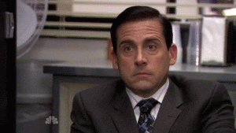

Gabriel de Oliveira
Estudante de desenvolvimento web Full-Stack

Estudante de desenvolvimento web Full-Stack
O meu nome é Gabriel de Oliveira Pereira e tenho 23 anos. Durante todo o meu tempo de colégio, não fazia ideia de como estudar e na verdade não fazia muita questão. Aos meus 19 anos comecei a estudar para concursos militares, foi nessa época que aprendi a estudar de verdade e ter foco. Infelizmente não consegui ser aprovado e então decidi dar uma pesquisada sobre programação. Eu conheço a programação desde os meus 14 anos mais ou menos, porém, o meu primeiro contato de verdade foi em dezembro de 2021, quando decidi estudar a sério para tentar seguir carreira.
